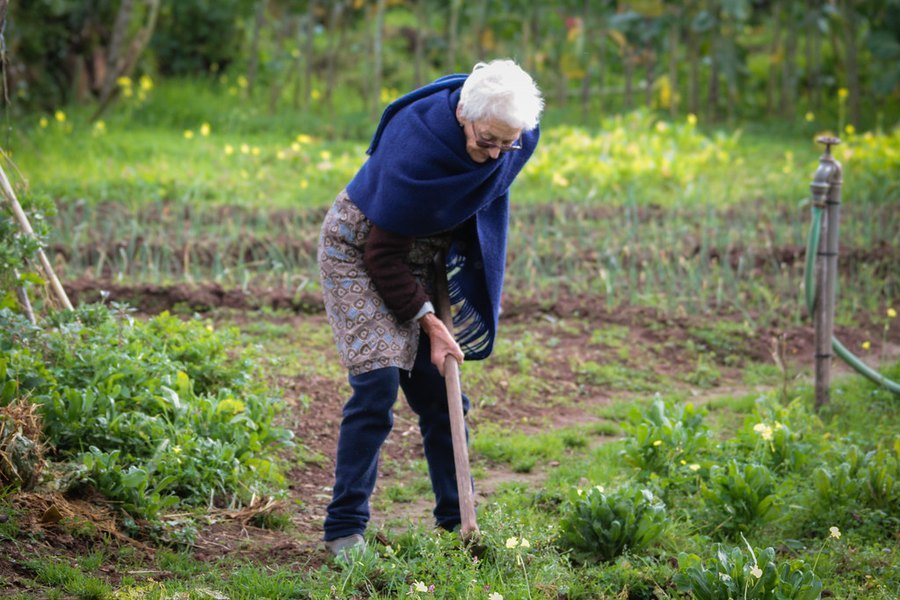

Strength Training After 50 for Men: Where to Start and How Often
Muscle and strength decline with age by default, but not on their own timeline. Here's what the evidence says about reversing that with simple strength work.

Key takeaways
- Strength training after 50 helps counter sarcopenia, the natural, age-related loss of muscle mass and strength that accelerates after midlife.
- Two to three sessions a week, covering the major muscle groups with a day of rest between, is enough for most men to see real change.
- Starting light and progressing gradually matters more than starting heavy. Form and consistency build the base that safe progress depends on.
- Most healthy men over 50 don't need medical clearance to start walking-and-bodyweight-level training, but it's worth a conversation if you have heart disease, joint problems, or haven't exercised in years.
- Noticeable strength gains often show up within 6 to 8 weeks, well before visible muscle change, which tends to take longer.
Strength training after 50 helps men hold onto the muscle, bone density and functional strength that naturally decline with age, a process researchers call sarcopenia. Two to three sessions a week covering the major muscle groups, starting light and adding weight gradually, is enough for most men to see measurable gains in strength within two months. It's one of the few interventions with evidence this direct for slowing age-related decline.
A lot of men assume strength training is either something they already missed the window for, or something that requires a gym membership and a training plan borrowed from a 25-year-old. Neither is true. Here's where to actually start.
Why does strength training matter more after 50?
Muscle mass declines gradually from early adulthood but speeds up noticeably after 50, with some research estimating a loss of roughly 1 to 2 percent of muscle mass per year past that age if nothing is done to counter it. Strength tends to decline even faster than raw muscle size. That combination affects more than appearance: it's tied to slower walking speed, higher fall risk, and reduced independence later in life. Resistance training is the single most direct, well-studied way to slow or partly reverse that trend.
What makes this different from most other aging-related changes is how directly it responds to a specific action. You can't will your hearing to improve or your skin to stay as elastic as it was at 30, but skeletal muscle keeps the ability to adapt to a training stimulus well into old age. Trials enrolling men in their 60s, 70s and even 90s have documented real strength gains after a few months of consistent resistance work, which is a genuinely unusual finding in aging research.
What actually happens to men's muscle and strength as they age?
Beyond the gradual loss of muscle fibers, aging muscle also loses some of its fast-twitch fibers, the type responsible for quick, powerful movements like catching your balance after a stumble. Hormonal shifts, including a gradual decline in testosterone, contribute somewhat, but inactivity is a much bigger driver than hormones for most men. That's good news: it means the decline responds to training, not just to things outside your control.
Bone density follows a related path. Men lose bone more slowly than women do in midlife, since they don't go through the sharp hormonal drop of menopause, but the loss is still real and accelerates further in the decades past 50. Weight-bearing and resistance exercise is one of the few interventions shown to help maintain bone density in this age group, which makes strength training relevant to fracture risk later in life, not just to how a shirt fits now.
How many days a week should a man over 50 lift weights?
Two to three non-consecutive days a week, covering the major muscle groups each session, lines up with the official physical activity guidelines for adults and with what most strength-training research in older adults actually tests. Muscle needs roughly 48 hours to recover and adapt after a real strength session, which is why rest days aren't wasted time; they're part of how the training works.
A full-body approach, hitting legs, chest, back, shoulders and core in the same session, tends to suit beginners over 50 better than splitting muscle groups across different days the way some younger lifters do. It's simpler to stick with, easier to recover from while you're still learning the movements, and research on older adults doesn't show a meaningful disadvantage to training the whole body each time compared with a split routine.
What exercises should a beginner start with?
| Exercise | Sets x reps | What it trains |
|---|---|---|
| Chair squat or bodyweight squat | 2–3 x 10–12 | Legs, hips, getting up from a seated position |
| Wall push-up or incline push-up | 2–3 x 8–12 | Chest, shoulders, triceps |
| Seated or standing row (band or dumbbell) | 2–3 x 10–12 | Upper back, posture |
| Dumbbell shoulder press, light | 2 x 10 | Shoulders |
| Plank, modified if needed | 2–3 x 20–30 sec | Core stability |
This is a reasonable full-body starting routine, not a finished program. The point early on is learning the movement pattern with a weight, or no weight at all, that feels manageable, then adding small amounts of resistance as it gets easier.
A warm-up matters more here than it did at 25. Five to ten minutes of easy movement, a short walk, some arm circles, a few slow bodyweight squats, raises the temperature of muscles and lubricates joints before they're asked to work against resistance. Skipping straight from sitting on a couch to loading a barbell is a common way beginners of any age get hurt, and the margin for that mistake narrows somewhat as joints age.
How much weight and how many reps is safe to start with?
A weight you can lift for 10 to 12 reps with good form, finishing the last couple of reps feeling genuinely challenged but not straining or losing form, is a reasonable starting point for most exercises. Bodyweight alone is a completely valid starting "weight" for men who haven't trained in years; a chair squat and a wall push-up build real strength before any dumbbell gets involved. Progress by adding small amounts of weight or reps every one to two weeks, not by jumping to a heavy load on day one.
Breathing matters more than most beginners realize. Holding your breath while straining against a heavy load can spike blood pressure sharply for a moment, which is a reason to exhale through the hardest part of a lift rather than bracing and holding air in. It's a small technical detail, but it's one of the easiest ways to make an already-safe exercise even safer.
Soreness the day or two after a new exercise is normal and expected; sharp pain during a movement, or pain that lingers and worsens with each session, is not. Learning that distinction early, rather than pushing through the second kind of pain out of stubbornness, prevents most of the setbacks that cause people to quit a new routine in the first month.
Can strength training help testosterone or metabolism?
Resistance training is linked to modest short-term increases in testosterone around a workout, and more importantly, to better long-term body composition, since muscle burns more resting energy than fat tissue. It's not a reliable way to meaningfully raise baseline testosterone on its own in most men. For where your levels actually stand and what counts as normal by age, see our guide to testosterone levels by age.
The metabolism angle is a little more dependable than the testosterone one. Muscle tissue burns more calories at rest than fat tissue does, pound for pound, so building and keeping muscle helps offset the gradual slowdown in resting metabolic rate that tends to come with age. It won't replace the effect of diet on body weight, but it changes the baseline you're working from in a way that compounds over years, not weeks.
Who should check with a doctor before starting?
Most healthy men can start walking and basic bodyweight strength work without a medical visit first. It's worth checking in before starting if you have diagnosed heart disease, uncontrolled blood pressure, a recent surgery, significant joint pain, or haven't done any structured exercise in several years. This is a quick conversation, not a reason to delay getting started once you get the go-ahead.
Men managing diabetes, a hernia, or a history of stroke should also flag strength training specifically, since certain exercises and breathing patterns need adjusting for those conditions. None of this is a reason to assume strength training is off the table; it's a reason to get a specific green light rather than guessing, especially for anything beyond bodyweight-level effort.
What mistakes do men commonly make starting later in life?
- Jumping to heavy weight before the movement pattern feels controlled
- Skipping a warm-up, which matters more as joints age
- Training the same muscles two days in a row with no rest between
- Comparing progress to a much younger lifting history instead of to last month
- Stopping after a few weeks because results aren't dramatic yet
How does strength training compare with cardio for this age group?
They're not competing priorities; they cover different ground. Cardio supports heart health and endurance. Strength training is what directly preserves muscle, bone density and the ability to get up off the floor without help, none of which cardio alone reliably protects as you age. Most guidelines for older adults now recommend both, not one instead of the other, along with adequate protein. See our guide to how much protein you need per day after 50 for the nutrition half of this.
If time is genuinely limited and a choice has to be made on a given day, that's a judgment call rather than a rule, and it depends on what you're missing more: men who already walk or cycle regularly but never lift anything heavier than groceries are usually better served adding strength work, while men who lift occasionally but rarely raise their heart rate for more than a few minutes have the opposite gap to close.
How soon will you actually notice results?
Strength gains, meaning the weight you can lift or the reps you can complete, often show up within 6 to 8 weeks of consistent training, partly from the nervous system getting better at recruiting muscle before the muscle itself changes much. Visible size or shape changes take longer, often several months, and are naturally slower in men over 50 than in younger lifters. Patience with the visual side, while trusting the strength numbers, is the realistic way to stay with it.
Functional changes often show up before either of those, in ways that are easy to miss if you're only watching the mirror or the scale. Standing up from a low chair without using your hands, carrying groceries in one trip instead of two, or climbing a flight of stairs without stopping are the kind of everyday markers that tend to improve within the first month or two, and they're arguably the most meaningful measure of progress for this age group in the first place.
Frequently asked questions
Is it too late to start strength training at 60 or 70?
No. Studies have found meaningful strength gains in people starting resistance training well into their 70s and 80s. Starting later means starting carefully, not skipping it.
Do you need a gym membership to do this?
No. Bodyweight exercises, resistance bands and a couple of adjustable dumbbells at home cover a full beginner program.
How much protein do you need to support muscle growth after 50?
Many guidelines suggest somewhat more than the general adult minimum, since older muscle responds less efficiently to protein. Our guide to protein intake after 50 covers the specifics.
Can strength training help with existing joint pain?
Often, yes, since stronger muscles around a joint can reduce the load the joint itself has to absorb. It should be approached carefully and sometimes alongside a doctor or physical therapist if pain is already present.
Should you stretch before or after lifting weights?
A short dynamic warm-up, like easy movement through the exercise itself at a lighter load, is generally preferred before. Static stretching, holding a stretch, is often saved for after, when muscles are warm.
How long until visible muscle change shows up?
Often a few months of consistent training, longer than the strength gains themselves take to show up on the numbers.
Does strength training actually help prevent falls?
Yes, indirectly. Stronger legs and better balance-related strength reduce fall risk, which is one reason resistance training is recommended specifically for older adults, not just younger lifters.
Related: Testosterone levels by age: what counts as normal? · Zinc for men: benefits and how much you need · How much protein do you need per day after 50?
Image: DanielaC173 / Openverse (Flickr) / CC BY-SA 2.0